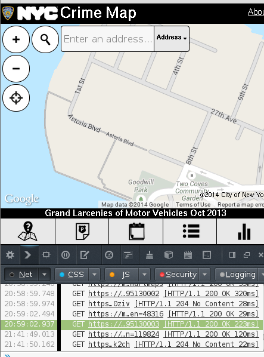
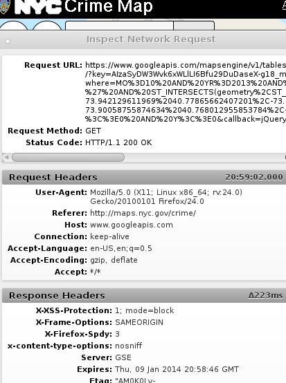

NYC Crime Map Data API
People have been complaining a lot about how you can’t get the raw data out of this NYC Crime Map. I don’t know what they’re talking about. Here are the data, as two geojson files.
Read on to see how I got these files.
API for the data
Go to the crime map, and look at the network requests that are being made. You’ll see a bunch of calls to the Google Maps Engine API.

Look at one of them, and you’ll see the exact query that is being made.

It’s calling the Tables.features endpoint of the Google Maps Engine API.
Here’s the function I wrote for calling that endpoint.
def table_features(table_id, select, where = None, maxResults = 1000, pageToken = None):
url = 'https://www.googleapis.com/mapsengine/v1/tables/%s/features/' % table_id
params = {
'key': KEY,
'version': 'published',
'maxResults': maxResults,
'select': select,
}
if where:
params['where'] = where
if pageToken:
params['pageToken'] = pageToken
headers = {
'User-Agent': 'Mozilla/5.0 (X11; Linux x86_64; rv:24.0) Gecko/20100101 Firefox/24.0',
'Referer': 'http://maps.nyc.gov/crime/',
}
r = requests.get(url, headers = headers, params = params)
return r
Two tables
The data are stored in two tables.
- 02378420399528461352-11853667273131550346
- 02378420399528461352-17772055697785505571
The latter of these tables contains a “CR” field for the crime type; the former does not.
I don’t know why they do this.
Table schema
You can supposedly get the table schema with the
Tables
endpoint, but the key doesn’t seem to give us access to that.
Here’s the function I wrote to call the Tables endpoint.
def table(table_id):
'''
This would tell us the schema, among other things.
https://developers.google.com/maps-engine/documentation/reference/v1/tables#resource
'''
url = 'https://www.googleapis.com/mapsengine/v1/tables/%s/' % table_id
params = {
'key': KEY,
}
headers = {
'User-Agent': 'Mozilla/5.0 (X11; Linux x86_64; rv:24.0) Gecko/20100101 Firefox/24.0',
'Referer': 'http://maps.nyc.gov/crime/',
}
r = requests.get(url, headers = headers, params = params)
return r
Now I try to run it.
import crime
r = crime.table('02378420399528461352-17772055697785505571')
print(r.text)
And here’s the result.
{
"error": {
"errors": [
{
"domain": "global",
"reason": "required",
"message": "Login Required",
"locationType": "header",
"location": "Authorization"
}
],
"code": 401,
"message": "Login Required"
}
}
You can see some of the columns in the crime map JavaScript code, but there might be columns in the table that aren’t exposed in the crime map website.
Getting the data as GeoJSON
I downloaded the full tables from the Google Maps Engine API, so now you can download them as ordinary GeoJSON files, one per table. Read more here.
More seriously
While everyone has permission to download these data, I do know that getting them seems impossible to some people. It’s funny, though, that it has taken me so long to do something so simple.
It usually takes quite a lot to convince me that something might be vaguely useful. People complained a bunch about this map, so I finally got the data into a nicer form, but I’m still skeptical that it’s really useful at all.
So please convince me that I didn’t just waste two hours.